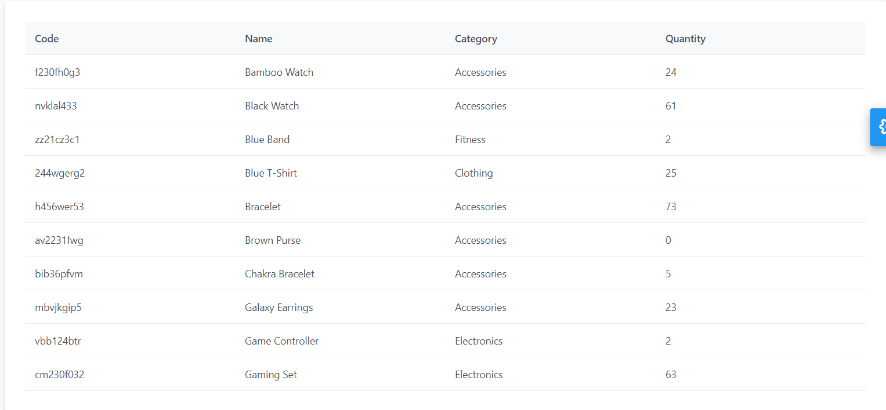

DAY26-如何與人協同工作與好好溝通-後端工程師篇
DAY26-如何與人協同工作與好好溝通-後端工程師篇
前端與後端的關係
在早期還沒有前後端分離的時候，前後端是要共同維護一份檔案的，例如.net的cshtml
@{
var joe = new Person("Joe", 33);
}
<p>Age@(joe.Age)</p>這樣的做法的缺點是，檔案的拆分都需要和後端協商討論，因為後端要得要修改同樣的檔案。因此造成前後端常常在改同一份檔案，如果沒有約定好統一個改法或風格的話，常常衝突的亂七八糟。
後來發展出前後端分離與RESTful API後，相當大程度將前端與後端的工作分開來，不會再緊緊相依，彼此溝通的管道就是透過API來溝通。但是用API溝通之後，就不代表就不會有溝通的問題，只能說問題會比較少，還是會遇到像下列的問題:
- API要求的格式或參數好奇怪
- API給的結果很奇怪，根本不能直接用，還要做很多轉換
反過來說，後端也會覺得前端很奇怪，要求奇怪的格式或結果。
所以前端和後端溝通的問題成為:API要怎麼開呢?
API的開發流程
API的開發流程究竟是要前端主導還是後端主導呢?
在此我的建議是:都可以，在不破壞大原則之下，以最節省雙方時間的做法為主
不破壞大原則
不破壞大原則的意思是不為了對方的需求而破壞原本的流程或程式結構。例如前端為了應對後端的格式，要多開原本沒有設計時沒有預留的方法或頁面，要特別額外去處理的，就算是破壞大原則的一種
節省雙方的時間
如果雙方都認為要調整的話，那麼以調整起來最方便的那端為主。例如後端調整個格式需要三天的時間，而前端拿到資料調整只要一天的時間，那麼就給需要時間最少的前端調整。畢竟前後端是一個團隊，要以團隊最快的流程作為主要考量。
API開發流程的例子
以下面的表格為例:

一個表格有四個欄位，後端開給我五支API。一支API取得資料的ID，再用ID去分別查詢四個欄位的API，查完之後，再用ID去對應資料把一列的資料分別聚合起來成一筆。
原本只是一個取資料然後填上去的動作，原本我預計不用幾個小時就可以完成，因為這樣的API格式讓我做了一個禮拜，想辦法處理資料、聚合資料然後再檢驗我的做法有沒有錯誤。
當時為了做這個讓我整個時程大大地被拖延。後來我有去找後端聊聊這件事情，為什麼不開一支API幫我處理好資料，讓我拿到資料可以不用處理，直接使用。他跟我解釋，開五支API是為了後端設計原則，不讓API太過於複雜，但是他沒有想到我會額外花這麼多時間去處理，因此我們就溝通好為了節省我的時間，他可以不動這五支API破壞後端的原則，另外再開一支API幫我處理這些資料，因為他處理這些資料不過是一下子的時間，不若前端處理那麼複雜。
這件困擾我已久的事情就這麼簡單地解決了，也讓我體悟一件事情：其實大家在別人有困難的時候都是很願意幫忙的，很多時候是根本不知道你的問題而無從幫起，這件事情最好的解法就是好好地溝通